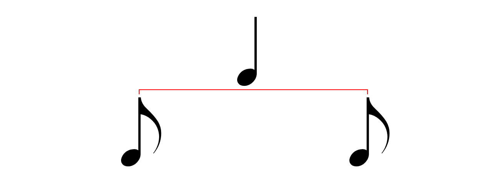

Тривалість нот
Тривалість ноти - це відрізок часу, впродовж якого звучить нота:
Ціла нота має найдовшу тривалість:

Половинна нота має половину тривалості цілої ноти:
Дві половинні ноти займають стільки ж часу, скільки й ціла нота:
Четвертна нота має відповідно чверть цілої ноти:
Чотири четвертні ноти займають стільки ж часу, скільки й ціла нота. Тривалість двох четвертної ноти дорівнює тривалості половинної ноти:
Далі до нот додаються прапорці. Кожен прапорець поділяє тривалість ноти на два. Восьма нота має один прапорець:
Таким чином, дві восьмі ноти займають стільки ж часу, скільки й чверть ноти:
Шістнадцята нота має два прапорця:
Дві шістнадцяти ноти займають стільки ж часу, скільки й восьма нота:
Наступна діаграма відображає взаємозв'язок всіх п'яти типів нот, що були розглянуті:
Ноти можуть мати три або більше прапорців, але вони рідко використовуються.